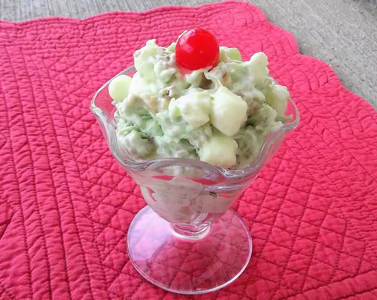

Pistachio salad

Description
Pistachio salad (a.k.a. Watergate salad) is a dessert salad or side dish made with pistachio pudding, canned fruit, whipped topping, and marshmallows.
The original recipe was published by General Foods under the title "Pistachio Pineapple Delight"
Ingredients
- 1 (20 ounce) can crushed pineapple, drained
- 1 (3 ounce) package instant pistachio pudding mix
- 1 (8 ounce) container frozen whipped topping, thawed
- ½ (10.5 ounce) package miniature marshmallows
How to Make
- Gather the ingredients
- Combine pineapple and dry pistachio pudding mix in a large bowl. Fold in thawed whipped topping and marshmallows until well mixed
- Refrigerate until chilled and serve